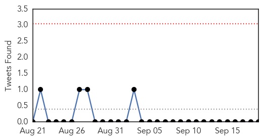
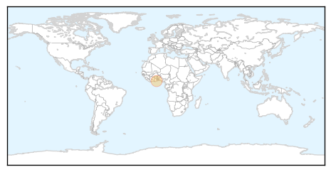
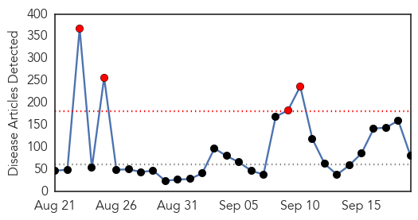

Cholera
30-Day Web Trend
0 alerts, 0 warnings
30-Day Twitter Trend
0 alerts, 0 warnings

Article Locations
Article Confidences

Top Articles:
Top Tweets:
-
No tweets found for Sep 19, 2014
Unknown
30-Day Web Trend
4 alerts, 0 warnings

30-Day Twitter Trend
0 alerts, 0 warnings
Article Locations

Article Confidences

Top Articles:
- 0.997
- Enterovirus may be cause of ill children in Connecticut
- 0.995
- York prepares for rare respiratory virus affecting children
- 0.994
- Respiratory virus EV-D68 cases found in 4 Southern California children
- 0.988
- Bethel Park retracts warning of respiratory illness
- 0.986
- Allegheny County health officials: Bethel Park schools too quick to release alert on virus
- 0.977
- 2 cases of D68 virus confirmed; 1 from Snohomish County
- 0.974
- Avian Flu In Harbor Seals Could Infect People
- 0.968
- Enterovirus D68: 14 cases confirmed in Hamilton
- 0.966
- Parents advised not to worry
- 0.964
- 3 Enterovirus D68 cases confirmed in Michigan
- 0.963
- Number of suspected enterovirus cases continues to drop in Windsor
- 0.963
- California hit with first 2014 wave of enterovirus D68 — RT USA
- 0.959
- Officials: 706 babies, 43 employees exposed to tuberculosis at El Paso hospital
- 0.956
- Serious respiratory illness has arrived in Seattle
- 0.954
- Children's respiratory illness spreads to West Coast
- 0.951
- Fourteen Hamilton children test positive for D68 virus
- 0.949
- UPDATE: Three Confirmed Cases of Enterovirus D-68 In Michigan
- 0.946
- Health Officials: ‘Just a matter of time before flu hits where you live’
- 0.944
- 3 People in Michigan Test Positive for Rare Enterovirus
- 0.929
- Flu Mist nasal spray replacing standard shot
- 0.928
- Rare respiratory virus spreads to 22 states
- 0.917
- Chicago Tribune
- 0.917
- Chicago Tribune
- 0.917
- Chicago Tribune
- 0.917
- Chicago Tribune
- 0.917
- Chicago Tribune
- 0.917
- Chicago Tribune
- 0.917
- Chicago Tribune
- 0.917
- Chicago Tribune
- 0.917
- Chicago Tribune
- 0.917
- Chicago Tribune
- 0.917
- Chicago Tribune
- 0.917
- Chicago Tribune
- 0.917
- Chicago Tribune
- 0.917
- Chicago Tribune
- 0.917
- Chicago Tribune
- 0.917
- Chicago Tribune
- 0.917
- Chicago Tribune
- 0.892
- Two children first cases of enterovirus in the state
- 0.875
- Health Crisis Looms With Decay of Zimbabwe’s Public Water System
- 0.866
- 5 facts you need to know about the humanitarian crisis in Yemen
- 0.866
- A woman uses her mobile phone at an evacuation centre for flood victims as tropical storm Fung-Wong battered Manila
- 0.866
- Flood victims seek shelter at an evacuation centre after their homes were inundated as Tropical storm Fung-Wong battered the Philippine capital Manila
- 0.866
- Iraqi Kurdish president urges international community to "use all means" to protect Syrian city
- 0.866
- Russian minister says Exxon continues drilling with Rosneft
- 0.866
- Soldiers wait for a tow truck with their stalled military rescue vehicle along a flooded road as tropical storm Fung-Wong battered the Philippine capital Manila
- 0.836
- Three cases of enterovirus D68 confirmed in Mich.
- 0.829
- Case of rare respiratory virus confirmed in Panhandle
- 0.827
- OHA: Blue-green algae in Willamette River toxic species
- 0.814
- Hemispherx Biopharma, Inc. Stock - Yahoo! Finance
Showing top 50 articles...
Top Tweets:
- 0.964
- Flu Fact Friday: The flu vaccine cannot give you the flu.
- 0.705
- Flu season typically starts in the fall and peaks in January/February. Getting the flu vaccine is your best protection against the flu.
- 0.702
- Health officials urge flu vaccination http://t.co/74rqNPDwpY FightFlu
- 0.511
- RT: una cosa es cagarla de vez en cuando y otra brodel, es vivir con diarrea